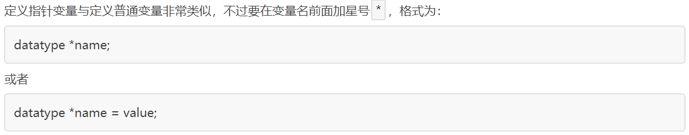

【本文结构】
1、指针和指针变量
2、指针变量的定义和使用
3、指针变量的运算（加法、减法和比较运算）
4、(一维)数组指针（指向(一维)数组的指针）
5、字符串指针（指向字符串的指针）
6、指针变量作为函数参数
7、指针作为函数返回值

//定义普通变量
float a = 99.5, b = 10.6;
char c = '@', d = '#';
//定义指针变量
float *p1 = &a; //定义变量p1的同时对它初始化，将变量a的地址赋予它，此时p1就指向了a。注意：p1需要的是一个地址，a的前面必须要加取值运算符&，否则是不对的。
char *p2 = &c;
//修改指针变量
p1 = &b;
p2 = &d;
//指针变量也可以连续定义
int *a, *b, *c; //a、b、c 的类型都是 int*。
//注意每个变量前都要带 * 。如果写成下面的形式，那么只有 a 是指针变量，b、c 都是类型为 int 的普通变量：
int *a, b, c;
* 是一个特殊符号，表明一个变量是指针变量，定义 p1、p2 时必须带 * 。而给 p1、p2 赋值时，因为已经知道了它是一个指针变量，就没必要多此一举再带上*，后边可以像使用普通变量一样来使用指针变量。也就是说，定义指针变量时必须带 * ，给指针变量赋值时不能带 * 。
需要强调的是，p1、p2 的类型分别是 float* 和 char*，而不是 float 和 char，它们是完全不同的数据类型，读者要引起注意。
#include <stdio.h>
int main(){
int a = 15;
int *p = &a; //在定义指针变量的同时赋值
print("%d, %d\n", a, *p);
return 0;
}
运行结果：
15, 15
对星号 * 的总结
在我们目前所学到的语法中，星号*主要有三种用途：
表示乘法，例如int a = 3, b = 5, c; c = a * b;，这是最容易理解的。
表示定义一个指针变量，以和普通变量区分开，例如int a = 100; int *p = &a;。
表示获取指针指向的数据，是一种间接操作，例如int a, b, *p = &a; *p = 100; b = *p;。
#include <stdio.h>
int main()
{
int arr[] = {99, 15, 100, 888, 252};
int len = sizeof(arr) / sizeof(int); //求数组的长度，即数组元素的个数
int i;
for (i = 0; i < len; i++)
{
printf("%d ", *(arr+i) ); //*(arr+i) 等价于 arr[i]，这种是用指针的方式来遍历数组元素。
//若 int *p = arr，则 *(arr+i) 也等价于 *(p+i)，这种是用数组指针的的方式来遍历数组元素。
}
printf("\n");
return 0;
}
运行结果：
99 15 100 888 252
int arr[] = {99, 15, 100, 888, 252};
int *p = arr; //p 是一个数组指针，它指向数组中的第0个元素
对于上述的代码：
* 数组在内存中只是数组元素的简单排列，没有开始和结束标志，在求数组的长度时不能使用sizeof(p) / sizeof(int)，因为 p 只是一个指向 int 类型的指针，编译器并不知道它指向的到底是一个整数还是一系列整数（数组），所以 sizeof(p) 求得的是 p 这个指针变量本身所占用的字节数，而不是整个数组占用的字节数。
* 也就是说，根据数组指针不能逆推出整个数组元素的个数，以及数组从哪里开始、到哪里结束等信息。不像字符串，数组本身也没有特定的结束标志，如果不知道数组的长度，那么就无法遍历整个数组。
//下面这样定义，使 p 指向了数组的第二个元素
int *p = &arr[2]; //等价于 int *p = arr + 2;
printf("%d, %d, %d, %d, %d\n", *(p-2), *(p-1), *p, *(p+1), *(p+2)); //输出数组 arr 的所有元素
arr 可以认为是一个指针，可以直接赋值给指针变量 p。
对于赋初值：int *p = arr 等价于 int *p = &arr[0]。
赋完初值后： p 等价于 arr 等价于 &arr[0]， 这三种写法都是等价的，它们都是地址，指向数组第 0 个元素，或者说指向数组的开头。更一般地说，p+i 等价于 arr+i 等价于 &arr[i]，都是地址。
同时： p[i] 等价于 arr[i]，可以用 p[i] 来访问数组arr的元素。（使用下标的方式访问数组）
当然：*(p+i) 等价于 *(arr+i)。（使用指针的方式来访问数组）
数组指针指向的是数组中的一个具体元素，而不是整个数组，所以数组指针的类型和数组元素的类型有关，上例中，p 指向的数组元素是 int 类型，所以 p 的类型必须也是 int *。
反过来想，p 并不知道它指向的是一个数组，p 只知道它指向的是一个整数，究竟如何使用 p 取决于程序员的编码。
int main() {
int arr[] = {99, 15, 100, 888, 252};
int *p = arr, len = sizeof(arr) / sizeof(int);
int i;
for (i = 0; i < len; i++) {
printf("%d ", *p++); //输出结果为：99 15 100 888 252
//printf("%d ", *++p); //输出结果为：15 100 888 252 -858993460
}
printf("\n");
return 0;
}
//字符数组
char str[] = "http://c.biancheng.net";
char *str = "http://c.biancheng.net";
//或者
char *str;
str = "http://c.biancheng.net";
#include <stdio.h>
#include <string.h>
int main() {
char *str = "http://c.biancheng.net";
int len = strlen(str), i;
//直接输出字符串
printf("%s\n", str);
//使用*(str+i)字符串
for (i = 0; i < len; i++) {
printf("%c", *(str + i));
}
printf("\n");
//使用str[i]输出字符串
for (i = 0; i < len; i++) {
printf("%c", str[i]);
}
printf("\n");
return 0;
}
运行结果：
http://c.biancheng.net
http://c.biancheng.net
http://c.biancheng.net
int main() {
char *str = "Hello World!";
printf("%s\n", str);
str = "I Love C!"; //正确，更改指针变量本身的指向，指向新的字符串常量
printf("%s\n", str);
//str[3] = 'P'; //加入这一句的话能够正常编译和链接，但在运行时会出现段错误（Segment Fault）或者写入位置错误。
printf("%c\n", str[3]);
return 0;
}
运行结果：
Hello World!
I Love C!
o
int main() {
char str[20] = { 0 };
int i;
for (i = 0; i < 10; i++) {
*(str + i) = 97 + i; //97 为字符a的ASCII码值
}
printf("%s\n", str);
printf("%s\n\n", str + 2);
printf("%c\n", str + 2);
printf("%#X\n", str + 2);
printf("%c\n\n", *(str + 2));
printf("%c\n", str[2]);
printf("%c\n", (str + 2)[2]);
return 0;
}
运行结果：
abcdefghij
cdefghij
*
0X133F92A
c
c
e
#include <stdio.h>
void swap(int *p1, int *p2) {
int temp; //临时变量
temp = *p1;
*p1 = *p2;
*p2 = temp;
}
//下面这种方式是无法实现变量a、b的值互换的。
//void swap(int a, int b) {
// int temp; //临时变量
// temp = a;
// a = b;
// b = temp;
//}
int main() {
int a = 66, b = 99;
swap(&a, &b);
printf("a=%d, b=%d\n", a, b);
return 0;
}
运行结果：
a=99, b=66
int max(int *intArr, int len) {
int i, maxValue = intArr[0]; //暂时假设第0个元素是最大值
for (i = 0; i < len; i++) {
if (maxValue < intArr[i]){
maxValue = intArr[i];
}
}
return maxValue;
}
int main() {
int nums[6], i;
int len = sizeof(nums) / sizeof(int);
puts("请分别输入6个整数：");
for (i = 0; i < len; i++) {
scanf("%d", nums+i); //这里要用地址，nums+i 和 &num[i] 等价。
}
printf("The max value in this array is %d!\n", max(nums, len));
return 0;
}
运行结果：
请分别输入6个整数：
3
6
9
23
56
78
The max value in this array is 78!
int max(int intArr[6], len){
......
}
//也可以省略数组长度，把形参简写为下面的形式
int max(int intArr[], len){
......
}
形参 int intArr[6] 好像定义了一个拥有 6 个元素的数组，调用 max() 时可以将数组的所有元素“一股脑”传递进来。
形参 int intArr[] 虽然定义了一个数组，但没有指定数组长度，好像可以接受任意长度的数组。
实际上这两种形式的数组定义都是假象，不管是 int intArr[6] 还是 int intArr[] 都不会创建一个数组出来，编译器也不会为它们分配内存，实际的数组是不存在的，它们最终还是会转换为 int *intArr 这样的指针。这就意味着，两种形式都不能将数组的所有元素“一股脑”传递进来，大家还得规规矩矩使用数组指针。
int intArr[6] 这种形式只能说明函数期望用户传递的数组有 6 个元素，并不意味着数组只能有 6 个元素，真正传递的数组可以有少于或多于 6 个的元素。因为它最终还是要转化为像 int *intArr 这样的指针，同时结合数组的长度作为另一个参数，它们一起决定了数组的长度。
所以需要强调的是，不管使用哪种方式传递数组，都不能在函数内部求得数组长度，因为 intArr 仅仅是一个指针，而不是真正的数组，所以必须要额外增加一个参数来传递数组长度。
指针函数： C语言允许函数的返回值是一个指针（地址），我们将这样的函数称为指针函数。
#include <stdio.h>
#include<string.h>
char *strlong(char *str1, char *str2){
//形参 str1 和 str2 可能是一个字符类型的指针
//也可能是一个字符串指针，我们这里是作为字符串指针来使用的
if (strlen(str1) >= strlen(str2)){
return str1;
}
else{
return str2;
}
}
int main() {
char str1[30], str2[30], *str;
gets(str1);
gets(str2);
str = strlong(str1, str2);
printf("Longer string: %s\n", str);
return 0;
}
运行结果：
C Language↙
c.biancheng.net↙
Longer string: c.biancheng.net
#include <stdio.h>
int *func() {
int n = 100;
return &n;
}
int main() {
int *p = func(), n;
n = *p;
printf("value=%d\n", n);
return 0;
}
运行结果：
value=100
#include <stdio.h>
int *func() {
int n = 100;
return &n;
}
int main() {
int *p = func(), n;
printf("c.biancheng.net\n");
n = *p;
printf("value=%d\n", n);
return 0;
}
运行结果：
c.biancheng.net
value=7477640
可以看到，现在 p 指向的数据已经不是原来 n 的值了，它变成了一个毫无意义的甚至有些怪异的值。与前面的代码相比，该段代码仅仅是在 *p 之前增加了一个函数调用，这一细节的不同却导致运行结果有天壤之别，究竟是为什么呢？
前面我们说函数运行结束后会销毁所有的局部数据，这个观点并没错，大部分C语言教材也都强调了这一点。但是，这里所谓的销毁并不是将局部数据所占用的内存全部抹掉，而是程序放弃对它的使用权限，弃之不理，后面的代码可以随意使用这块内存。对于上面的两个例子，func() 运行结束后 n 的内存依然保持原样，值还是 100，如果使用及时也能够得到正确的数据，如果有其它函数被调用就会覆盖这块内存，得到的数据就失去了意义。